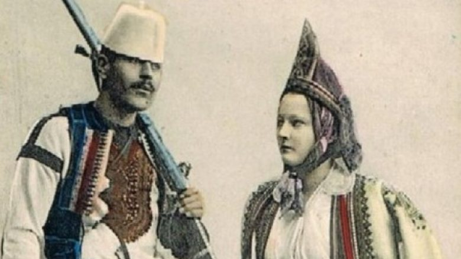

Fouillée dhe Konica për përfaqësuesit e sotëm të helenëve të lashtë

Ekspedita e Maksimilian Lambercit, në Shqipërinë e vitit 1916
Të dhënat për Trepçën nga Arkivi Shtetëror i Kosovës

Fati tragjik i autorit të veprës “Kosova, djepi i shqiptarizmit”: Enveri e akuzoi se hodhi gurë kundër Jugosllavisë motër